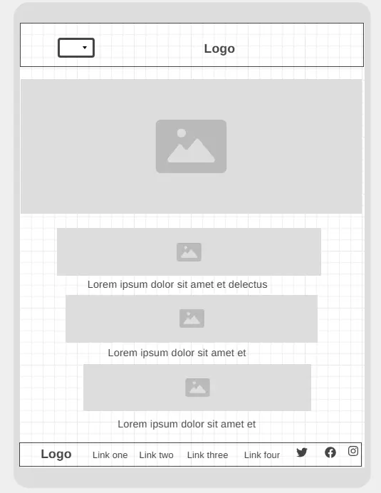
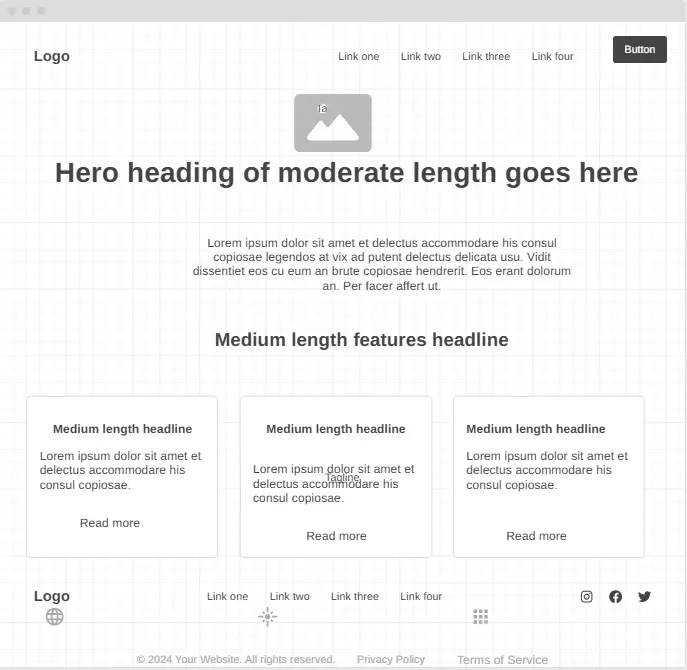

WDD 131 Final Project Site Plan - Victor Vega
Site Name
Proposed Site Name: Sweet Creations By Liss
Reason for Name Selection: The name "Sweet Creations by Liss" captures the essence of a bakery focused on creating delicious, unique cakes and pastries. It’s simple, memorable, and perfect for branding.
Site Purpose
The purpose of this website is to showcase cakes and pastries made by a skilled pastry chef. The website will provide information about the bakery's offerings, the ordering process, customer testimonials, and baking tips through a blog. Users will be able to place custom orders and stay updated on upcoming events and workshops.
Scenarios
- How can I place a custom order for a wedding cake?
- What types of pastries and cakes are available for delivery?
Color Schema
The following color schema will be used:
- Main Color: Pastel Pink (#FFC1C1) – used for the header background, buttons, and accents.
- Secondary Color: Dark Brown (#4B2E2E) – used for text, navigation, and footer background.
- Tertiary Color: white(#fff) – used for titles, nav, header and footer
Typography
- Heading Font: Roboto – a serif font for headings and titles to give an elegant feel.
- Body Font: sans-serif – a clean sans-serif font for readability in the main content.
Wireframe
Below are wireframe sketches for the mobile and desktop views of the home page layout.
Mobile View

Desktop View
